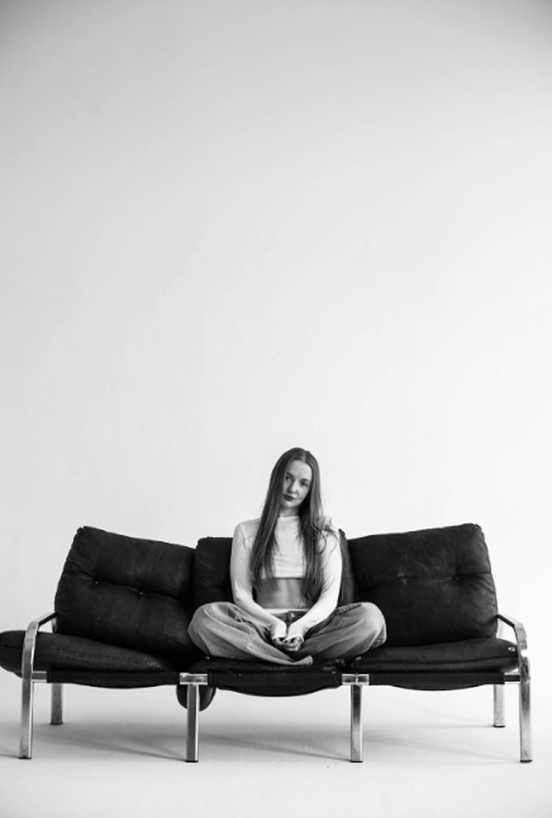

My art is a reflection of skin and color.
I paint the nude female form as a universal language for our most authentic self. True authenticity demands vulnerability—the courage to be seen in every shade of your being. It is not easy, but it is the only way to be truly, fully alive. The body, stripped of societal masks, is the ultimate symbol of this raw truth and the immense strength that vulnerability requires. This is our first and most honest state, the way we enter the world. By omitting faces, I focus on the core essence we all share, transforming each figure into a mirror for the viewer.
This body of work is a path through the reality of trauma and the slow, steady alchemy of healing. I explore the cataclysm of overwhelming pain that shatters one's world—a point where the only thing you can do is watch your inner galaxies turn to ruins. It feels like an ending. Yet this pain does not destroy; it purifies. It clears the ground for new growth. From the cracks in our soul, new galaxies begin to form. The ruins are not a final destination; they are a sacred gift and the only path to true transformation.
Color is the pulse of this journey. I wield bold, symbolic hues to give voice to the unspeakable—the electric charge of rage, the deep void of grief, the radiant warmth of rebirth. Each color is a deliberate choice, carrying the emotional weight and energy of the story being told.
Ultimately, this is my own story. Each painting is a page from my unconscious, a visual dialogue with myself: memories, doubts, fears, hopes; my own trauma and the vast spectrum of feelings it evokes. I often begin with an image that insists on being painted; its meaning unfolds during the act of creation. My art says what words cannot.
By sharing my journey, I hope to normalize every human emotion, especially difficult ones. We are here, ultimately, to feel—to experience life in its raw entirety and to grow through every encounter. The uncomfortable truth is that growth only happens through pain. Pain is not a detour from growth but its very terrain. Therefore, to deny the “bad” feelings born of trauma is to refuse growth itself, to silence a part of our soul, and to numb the profound sensation of being alive. Healing, and eventually growing, is not the absence of pain, but the courageous process of accepting it and living through it. Trauma is an inevitable part of this transformative passage.
It is a fundamental human experience. In revealing our inner battles and bare feelings, we find relief, connection, and the profound understanding that we are not alone in our struggles. This is my mission: to create a space where all emotions are welcome, and where our shared vulnerabilities become our greatest strength.
Welcome. This is more than a gallery; it is an invitation to witness the beautiful, painful, and powerful process of becoming.